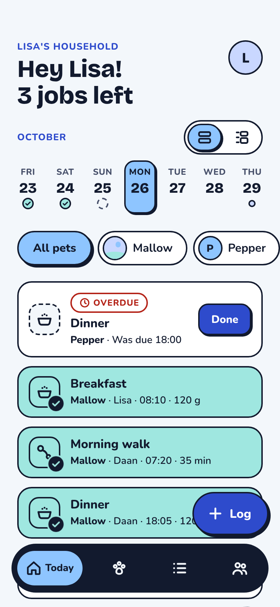
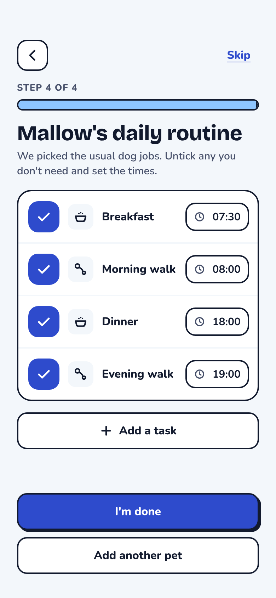
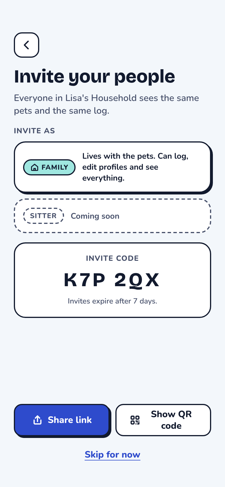
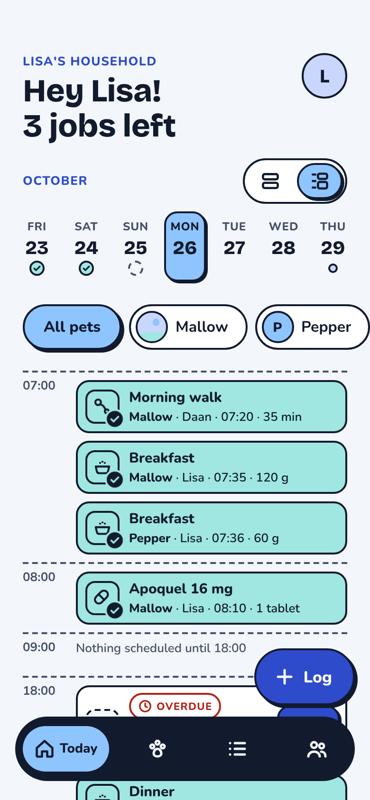
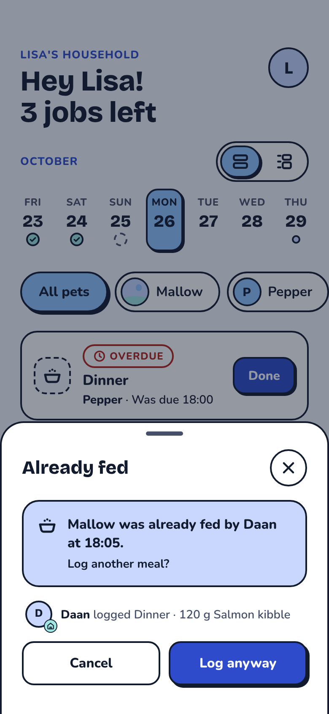
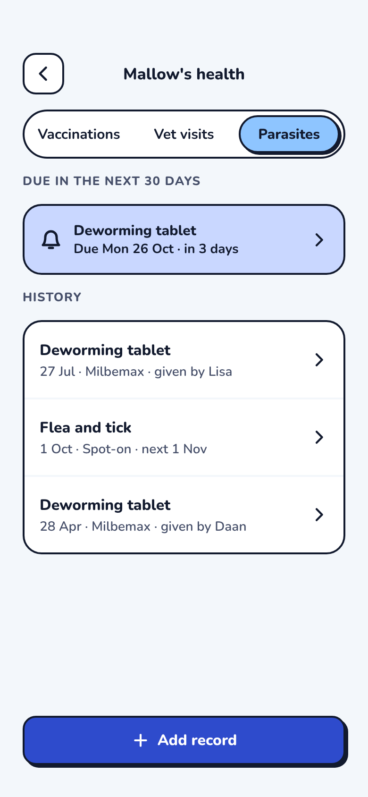
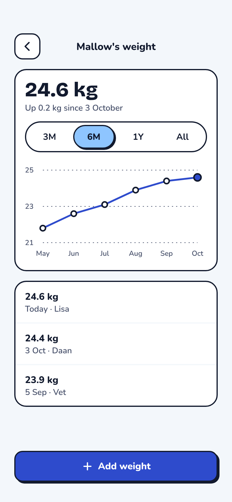
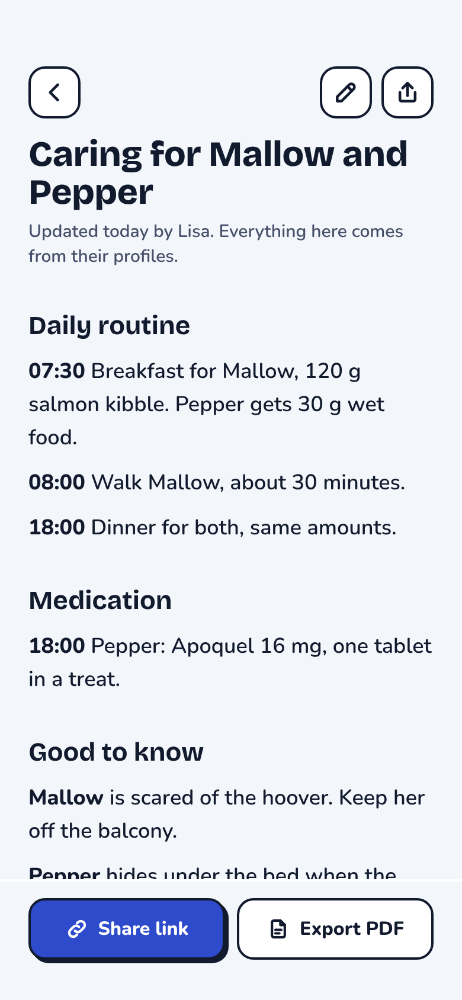

The double breakfast
Two people, one very convincing dog. She ate twice and told nobody.
Shared pet care for iPhone and Android
Furkin keeps everyone who cares for your pets on the same page. See what's done, what's due and who did it.

Sound familiar?
Two people, one very convincing dog. She ate twice and told nobody.
Was the 08:00 tablet given? Everyone thinks so. Nobody is sure.
Feeding times, the vet's number and where the lead lives, lost somewhere in a group chat.
How it works
Meals, walks, meds and the litter box, with times. Furkin turns them into a daily list.

Send a link to whoever shares the care. They see the same pets and the same list.

Tap or swipe when a job is done. The whole Household sees who did it, straight away.

Features
One list for the whole Household, with who did what and when.

Log a meal that has already been given and Furkin checks with you first.

Vaccinations, vet visits and worming, with reminders a week and a day before.

A clear chart and plain words: up 0.2 kg since 3 October.

Everything a sitter needs on one calm page. Export it as a PDF.
Tick jobs off a list, or see the day by the hour with a line for now.
Make it yours
Everyone in the Household picks their own. Try them on the phone.
Be the first to know when it lands on the App Store and Google Play.